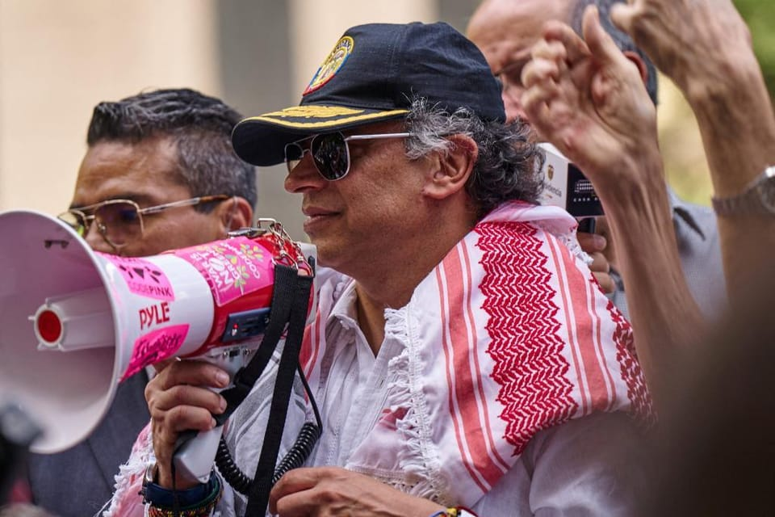

世界苦茶09月28日新闻 | 33条 | 俄罗斯协助中国培训空降兵斩首台湾

俄罗斯协助中国培训空降兵斩首台湾 | 习近平要求特朗普反对台独 | 特朗普在波特兰部署国民警卫队 | 联合国恢复对伊朗的制裁
每日三个新闻解读
苦茶数据
美元兑人民币：7.14（昨日7.14，前日7.14）
美元兑日元：149.51（昨日149.66，前日148.78）
上证指数：休市（昨日3828，前日3847）
标普500指数：休市（昨日6643，前日6604）
比特币：109624（昨日109789，前日109461）
布伦特原油：70.13（昨日69.52，前日69.14）
中国新闻
• 习近平要求特朗普做出重要表态，反对“台独”
在与特朗普政府展开一年高层互动的铺垫之后，习近平如今正追求他最终的目标——据知情人士透露，那就是促使美国政策发生变化，让中华民国实际控制下的台湾陷入孤立。知情人士表示，随着特朗普表现出在来年与中国达成经济协议的意愿，习近平计划施压特朗普，要求他正式表态“反对”台湾独立。自2012年末上台以来，习近平把控制台湾纳视为“中华民族伟大复兴中国梦”的核心。在打破惯例进入第三任期后，他多次强调，“统一”势在必行，不会被外部力量阻止，这显然是在指美国对台北在政治和军事上的支持。知情人士称，习近平已不再满足于拜登政府时期“美国不支持台湾独立”的表述。虽然这一说法曾令北京感到放心，但并未偏离美国战略模糊的“一个中国”政策——即承认北京对台湾的主张，但并不予以认可。对习近平来说，“不支持”与“反对”台湾独立之间并不是文字游戏，而是政策立场的根本转变。这意味着美国将从中立转向公开站在北京一方，反对中华民国主权。这种变化不仅可能进一步加固习近平在国内的权力，还可能成为他实现“统一”的关键突破。
• 欧盟指中国减排目标令人失望 北京批双重标准。
欧盟官员批评北京最新的减排承诺“令人失望”，称这将加大全球气候目标实现的难度后，中国外交部反批欧盟抱持“双重标准和选择性失明”，在自身气候目标上行动迟缓。中国日前公布了最新的国家自主贡献目标，承诺到2035年将温室气体排放量在峰值水平上削减7至10%。中国国家主席习近平9月24日宣布该目标时说，这是中国对照《巴黎协定》要求、体现最大努力制定的目标，并称中国有决心和信心兑现承诺。不过，欧盟气候事务专员胡克斯特拉认为，中国的目标“明显令人失望”，而且“远低于现实可行、符合要求的水平”。他还说：“鉴于中国占全球排放的巨大份额，这将大幅增加实现气候目标的难度”。
• 中国留学生回国探亲期间被捕 曾支持西藏活动。
据美联社报道，为西藏发声的中国女留学生张雅笛近日在回国探亲时被中国当局拘押。这一事件发生在北京日益加大力度打压异议声音的背景之下，打压范围不仅限于国内，已延伸至海外。据美联社报道，22岁的中国留学生张雅笛在今年夏天回家乡长沙探亲时，被国安人员以涉嫌“煽动分裂国家罪”拘捕。10日前，华语青年挺藏会曾在X上发表紧急贴文，称张雅笛“回国失联47天，疑涉‘危害国家安全’”。7月30日在香格里拉与外界失联 张雅笛的朋友夏巢川表示，她于7月4日在阿姆斯特丹送别张雅笛，7月30日开始与外界失联。几周后，她才得知张雅笛已于7月31日被拘押。
• 新疆维吾尔自治区成立70周年：高调庆祝与监控打压。
2025年9月27日中国国家主席习近平在视察新疆维吾尔自治区时，盛赞民族自治政策，并呼吁各方共同努力建设“美丽新疆”，但分析人士和一位流亡维吾尔族人士却揭示了截然不同的现实。维吾尔诗人埃尔昆表示，他无法忍受观看中国国家主席习近平本周庆祝新疆维吾尔自治区成立70周年的画面。中国官方媒体的直播显示，习近平在新疆红毯上受到热烈欢迎，当地人身着维吾尔族传统服饰载歌载舞。大约30年前，埃尔昆因遭受中国政府迫害而逃离新疆。这位现居伦敦的56岁维吾尔族诗人说道：“我不忍直视。就看了那么一两秒钟我就停下来了。
• 中国的目标是在机器人技术领域超越美国。
中国推出巨型 "机器人新兵训练营"，培养世界领先的仿人机器人 训练基地将在各种环境中对新机器人进行训练，从而加快其开发速度 中国正全力以赴，在开发先进仿人机器人的竞赛中超越美国。其最新战略是：将机器人送入新兵训练营。全国各地的城市都在开设巨大的仿人机器人训练基地，让机器人在各种不同的场景中接受训练，并收集训练数据，帮助制造商加快产品开发。当地政府周四宣布，这些设施中最大的一个位于北京市石景山区，占地面积超过1万平方米，每年将产生600多万个数据点。根据当地政府的声明，培训基地旨在解决 "当前的数据短缺 "问题，这一问题阻碍了中国国内产业的发展。北京中心为机器人培训提供了 16 个具体场景。
• 汉语会成为非洲的未来语言吗。
如今，中文学校几乎遍布整个非洲大陆。随着文化的传播，中国也在推广其政治意识形态，同时不断扩大经济影响力。有南非学者对DW表示，非洲国家对此应谨慎，应出台规则约束中国影响力。米拉迪·切克波住在贝宁，是一名中文翻译，她在一家中国贸易公司工作。对她来说，这就像梦想成真。“在中学时，我就看中国电视频道，梦想着去中国旅行，体验那里的文化，”她告诉DW。这也是她一直追寻的梦想：高中毕业后，她的第一站就是贝宁阿波美卡拉维大学的孔子学院。“我在那里学习中文，学了三年，获得了中文专业学位，”她自豪地说。她还有一个更大的目标。
印太新闻
• 巴厘岛正在成为成功学的牺牲品。
印尼著名的热带天堂巴厘岛多年来吸引了大量游客。但它也让越来越多的人感到失望，佐伊-雷就是其中之一。"自从登陆巴厘岛后，我们感觉有些不对劲，"她在今年 7 月的一段 YouTube 视频中说道，这段视频是在她的酒店房间里拍摄的。"我们带着很高的期望来到巴厘岛，因为我们在社交媒体上看到每个人都玩得很开心。她补充说："如果你拍一张咖啡店的照片并放大，你就会看到现实是怎样的。瑞女士没有描述她所看到的现实，也没有回答 BBC 的问题。但这足以让她感到不安，以至于她临时预订了飞往迪拜的航班。
• 印度政治集会发生挤压事件，30 多人死亡。
印度南部泰米尔纳德邦官员称，至少有 36 人在政治集会的挤压中丧生，其中包括儿童。周六，数万人聚集在南部卡鲁尔地区，参加演员出身的政治家维贾伊的竞选活动。据当地媒体报道，活动推迟了几个小时才结束。电视播放的画面显示，拥挤的人群中有人晕倒。政治家森蒂尔-巴拉吉在当地一家医院外向记者证实了死亡人数，并补充说还有 50 多人受伤。泰米尔纳德邦卫生部长马-苏布拉马尼安告诉当地媒体，死亡人数中至少包括 16 名妇女，9 名男子和 6 名儿童。泰米尔纳德邦首席部长斯大林说，一些人在挤压中晕倒后被送往医院。他补充说，已请求附近地区的医生提供额外援助。斯大林补充说。
• 柬埔寨国防部9月27日称，当天11时52分左右，泰国军队向柬军事基地发动攻击，向柏威夏省安塞地区的基地发射多枚迫击炮弹，并向这一基地开枪射击。
“截至目前，柬埔寨武装部队将继续以极其谨慎的态度和高度的注意力关注事态发展，并已做好充分准备，捍卫领土完整”。泰国陆军发言人文泰·苏瓦里说，当天12时至12时30分，陆军第二军区发现柬军向崇安玛地区开枪并发射榴弹。泰军立即进入戒备状态，并根据情况下令进行反击。文泰指出，柬方近期经常带“临时观察团”前往该地区检查，当天的事件或为柬方蓄意挑衅，企图引诱泰方开火反击，以便向“临时观察团”提交所谓“泰方违反停火措施”的证据。
• 韩国国会9月26日通过《政治组织法》修正案，废除检察厅，新设公诉厅、重大犯罪调查厅，使公诉和侦办权完全分离。
有关沿革机构调整将于明年9月完成，使检察厅时隔78年消失在历史长河。企划财政部改为财政经济部，预算编制职能析出为（国务总理室）企划预算处。
• 日本宙斯盾舰赴美改装以搭载“战斧”导弹。
日本防卫省26日发布消息称，派遣海上自卫队宙斯盾舰 “鸟海” 号前往美国，为搭载用于反击能力的长射程巡航导弹 “战斧” 进行改装等。明年三月底前完成改装，之后还将在美国进行实弹试射。此次派遣将持续到明年九月中旬。据防卫省介绍，“鸟海” 号的母港是海自佐世保基地。该舰25日在海自横须贺基地实施了确认导弹搭载流程的训练，26日出发前往美国圣迭戈的海军基地。“鸟海” 号在当地完成所需软件的安装等之后，将反复进行包括实弹试射在内的船员训练，为明年夏季前后执行任务做好准备。防卫省计划在2025～2027年度从美国购入“战斧”导弹。“
科技新闻
• 埃森哲将“淘汰”无法经过再培训适应AI时代的员工。
过去三个月，埃森哲已在全球范围内裁员逾1.1万人，并警告称若员工经过再培训还不能适应AI时代，将有更多人被裁员。这家 IT咨询集团于周四公布了一项价值8.65亿美元的重组计划，并给出了下一年的展望，展望显示企业对咨询项目的需求持续低迷，同时美国联邦政府也在收紧开支。埃森哲首席执行官斯威特在与分析师的电话会议上说：“我们正在非常紧凑的时间表中完成裁员，因为根据我们的经验，我们无法通过对员工进行再培训来获得我们所需的技能。” 该公司表示，其员工中具备AI或数据专业技能的人数已达7.7万人，高于两年前的4万人。
经济新闻
• 经济学家希望克里斯托弗•沃勒出任下任美联储主席，但预计不能如愿
学术界的经济学家压倒性地希望美联储理事克里斯托弗•沃勒在明年接替杰伊•鲍威尔出任央行主席——但很少有人认为他会得到这份工作。在芝加哥大学布斯商学院的克拉克全球市场中心为英国《金融时报》所做的一项民调中，接受调查的经济学家中有82%选择沃勒作为他们心目中出任全球最重要央行行长的首选。不过，只有五分之一的受访学者认为他将在2026年接替鲍威尔
俄乌战争
• 俄经济困境加剧 或迫使普京收手。
石油收入大跌，预算赤字增长。如果欧盟加大制裁，俄罗斯经济可能会受到不可承受的压力。乌克兰战争给普京带来的财政压力增加。莫斯科计划增税，同时削减社会福利等开支。周三，俄政府宣布增值税计划从20%提高至22%，以弥补赤字漏洞。这违背了普京此前作出的承诺：2030年前不增税。此外，非军事开支——包括社会福利开支预计将继续削减。其原因包括俄罗斯石油收入大幅下跌。目前，俄罗斯的预算赤字已达到约4.2万亿卢布，这相当于该国GDP的约1.9%。政府此前设立的目标是不超过GDP的0.5%。基辅经济研究所专家瑞巴科娃预计，莫斯科将继续削减教育，医疗，社会福利。
• 拉夫罗夫告诉联合国俄罗斯没有攻击欧洲的计划，并警告将对侵略做出 "果断反应。
拉夫罗夫在联合国大会上表示，莫斯科 "无意 "攻击欧洲国家，同时警告说，"任何对我国的侵略都将得到果断的回应。他的讲话正值欧洲对未经授权飞入北约领空的行为日益担忧之际。北约战机最近在波兰上空击落了无人机，而爱沙尼亚报告称俄罗斯战斗机进入其领空并停留了12分钟。俄罗斯否认了这些指控，声称无人机的目标不是波兰，并指责是乌克兰的信号干扰使无人机偏离了航线。爱沙尼亚关于侵犯领空的指控也遭到莫斯科的拒绝。然而，欧洲官员认为这些事件是蓄意挑衅，旨在试探北约的反应。"拉夫罗夫在谈到莫斯科可能攻击北约国家的说法时说："俄罗斯从来没有也不会有这样的意图。
• 俄罗斯竞选联合国航空管理局理事会席位失败。
周六，在欧盟因入侵乌克兰而强烈反对后，俄罗斯未能赢回其在联合国航空机构理事会中的席位。在俄罗斯未能获得国际民用航空组织 36 个成员理事会席位所需的支持后，一名俄罗斯官员立即呼吁 "重新进行一轮投票"。2022 年，由于俄罗斯在与乌克兰的战争中非法没收了租用的飞机，各国将其逐出了国际民航组织理事会。国际民航组织理事会还指责俄罗斯在乌克兰东部俄罗斯控制的领土上空击落马来西亚航空公司 MH17 航班，造成 298 人死亡。欧盟委员会发言人安娜-凯萨-伊特科宁在周六的投票前表示，"一个危及航空旅客安全和安保并违反国际规则的国家在负责维护这些规则的组织理事机构中占有一席之地，这是不可接受的"。
• 俄罗斯助力中国伞兵 准备渗透台湾。
英国皇家联合军种研究所通过分析泄露的俄罗斯文件发现，莫斯科正在向中国出售一些高空伞降作战方案、两栖突击车等特殊的军事技术，这可能有助于北京为武力攻打台湾进行准备。分析指出，尽管中国军力现在远超俄罗斯，但后者的实战经验更加丰富。英国皇家联合军种研究所的分析基于黑客组织“黑月”提供的大概800页文件，其中包括莫斯科计划向北京供货的合同以及设备清单。“黑月”组织没有透露其成员真实身份，而其宣言中则强调自己反对那些推行侵略性外交政策的政府。美联社也得以查阅了英国皇家联合军种研究所获得的部分文件。尽管该智库表示文件似乎都是真实的。
• 前英国脱欧党议员在俄罗斯贿赂案中认罪。
奈杰尔-法拉奇领导的右翼政党 "改革英国"的前威尔士领导人承认在担任欧洲议会议员期间收受贿赂，以换取发表亲俄言论。内森-吉尔周五承认了2018年12月至2019年7月期间的八项受贿罪行，据他的律师称，预计他将面临牢狱之灾。吉尔曾于 2014 年 7 月至 2020 年 1 月在布鲁塞尔担任英国独立党和英国脱欧党的欧洲议会议员，他承认收受了奥列格-沃洛欣的钱财，以换取其亲俄言论，奥列格-沃洛欣是一名前乌克兰议员，因与克里姆林宫合作而受到美国制裁。吉尔未能赢得威尔士议会席位，于 2021 年 5 月离开了英国改革党。
• 摩尔多瓦人将在充满俄罗斯干预指控的关键议会选举中投票。
摩尔多瓦奇希讷乌--摩尔多瓦人周日将前往投票站，在充满俄罗斯干预指控的紧张议会选举中投票。这次投票可能决定该国的地缘政治未来：东西方之间的鲜明选择。摩尔多瓦地处乌克兰和欧盟成员国罗马尼亚之间，近年来一直在向西走向欧盟。周日的投票将选举出一个拥有 101 个席位的新议会，这将决定摩尔多瓦是继续西进，还是被拉回莫斯科的轨道。自2021年以来一直在议会中占据多数席位的亲西方执政党行动与团结党在这次选举中的对手是几个对俄罗斯友好的主要对手，但却没有可行的亲欧伙伴。
世界新闻
• 美国海军在致命打击中打死了 17 人。
现在，委内瑞拉正在向平民发放枪支 当埃迪特-佩拉雷斯年轻时，他应征加入了玻利瓦尔国家民兵，这是一支由已故总统乌戈-查韦斯于 2009 年创建的民间力量，旨在帮助保卫委内瑞拉。"查韦斯当时说："我们必须成为一个有能力保卫每一寸领土的国家，这样才不会有人来捣乱。16 年过去了，现年 68 岁的佩拉莱斯正与其他数千名民兵一起，准备应对美国可能发动的进攻。这支主要由老年人组成的破烂部队是在美国海军舰艇部署到南加勒比海地区后应召入伍的。
• 瑞士第二次就电子身份证进行投票。
瑞士选民将于周日投票决定是否采用电子身份证。该计划已获得议会两院批准，瑞士政府建议投赞成票。这是继 2021 年因数据保护问题和对拟议系统将主要由私营公司运营感到不安而被选民否决后，第二次就该问题进行全国投票。根据修订后的提案，新系统将完全由公众掌握，电子身份证上的数据将存储在用户的智能手机上，而不是集中管理，而且是可选的。公民仍可选择使用瑞士几十年来一直使用的国民身份证。为了缓解对隐私的担忧，特定机构在查询信息时，只能查询这些特定细节。支持者称，该系统将大大方便每个人的生活。
• 特朗普授权 "全力以赴"，波特兰成为最新一座部署军队的城市。
唐纳德-特朗普总统已下令向俄勒冈州波特兰部署美军，并授权在必要时使用 "全部武力 "镇压针对移民拘留中心的抗议活动。特朗普说，他 "指示战争部长皮特-黑格塞斯提供一切必要的部队，保护饱受战争蹂躏的波特兰"。他声称，此举将有助于保护 "我们被围困的任何移民及海关执法局设施免遭反法组织和其他国内恐怖分子的袭击"，并在 "真相社交 "上补充道："如有必要，我还将授权全力以赴。"这一声明引起了民主党议员的反对，他们表示没有必要向该市部署联邦军队。"波特兰不存在国家安全威胁。俄勒冈州州长蒂娜-科特克说："我们的社区是安全和平静的。在周六的新闻发布会上。
• 美国东南部为潜在热带风暴带来的强降雨做好准备。
美国东南部部分地区已开始准备应对潜在热带风暴带来的影响，这距离飓风 "海伦 "肆虐该地区并造成人员伤亡和灾难仅过去一年。南卡罗来纳州州长亨利-麦克马斯特宣布居民进入紧急状态，为预计将于下周初登陆的热带低气压 9 做准备。"麦克马斯特在周五的一份声明中说："虽然风暴的到来，速度和强度仍难以预测，但我们确实知道它将给整个南卡罗来纳州带来狂风，暴雨和洪水。"我们以前见过这种情况。他说："现在是时候开始关注官方来源的预测，更新和警报，并开始做准备了。据美国国家飓风中心称，风暴系统目前正在加勒比海部分地区上空盘旋，预计将在本周末开始影响古巴东部，牙买加。
• 联邦调查局特工被解雇，包括一些在2020年抗议活动中下跪的特工。
据联邦调查局特工协会和新闻报道，周五有十多名联邦调查局特工被解雇，包括一些在 2020 年 6 月警察杀害乔治-弗洛伊德后举行的种族正义抗议活动中被拍到下跪的特工。据《华盛顿邮报》报道，其中一些特工已于今年早些时候被重新分配，这被广泛视为降职。据《华盛顿邮报》报道，这些特工是由美国总统特朗普和时任司法部长比尔-巴尔派遣的，目的是阻止抗议者在2020年6月破坏华盛顿特区的联邦财产。根据司法部监督机构 2024 年对巴尔应对抗议活动的审查，华盛顿外地办事处的联邦调查局特工对巴尔的要求表示困惑。
• 鲁迪-朱利安尼与 Dominion 投票系统公司就其 2020 年大选诽谤诉讼达。
鲁迪-朱利安尼与多米尼恩投票系统公司就其毫无根据的2020年大选操纵指控而提起的价值13亿美元的诽谤诉讼达成和解。双方周五在华盛顿特区联邦法院提交的一份文件中表示，他们已同意永久驳回对这位前纽约市市长和前唐纳德-特朗普总统私人律师的诉讼。这份简短的文件没有引用和解条款。朱利安尼和这家总部位于科罗拉多州的公司的发言人周六表示，和解条款是保密的，拒绝进一步置评。Dominion 在 2021 年起诉朱利安尼，要求他赔偿损失 13 亿美元。
• 特朗普要求最高法院支持他希望对出生公民权施加的限制。
特朗普要求最高法院支持他希望对出生公民权施加的限制 华盛顿--美国总统唐纳德-特朗普政府要求最高法院支持他的出生公民权令，宣布父母非法或临时在美国出生的儿童不是美国公民。周六，美联社获悉了这一上诉，这启动了最高法院的程序，可能导致大法官在初夏就公民权限制是否符合宪法做出明确裁决。到目前为止，下级法院的法官已经阻止了这些限制在任何地方生效。共和党政府并未要求法院在做出裁决前让限制措施生效。司法部的请愿书已与挑战该命令的各方律师共享，但尚未提交最高法院备审。任何关于是否受理此案的决定可能都要在数月之后才能做出。
• 民意调查：美国人并不广泛支持特朗普部署国民警卫队。
根据 NPR-Ipsos 执法部门的一项最新民意调查，美国人对犯罪感到担忧，但并不广泛支持特朗普总统部署国民警卫队到美国城市维持治安。该调查还显示，在特朗普打击犯罪的策略上存在明显的党派分歧。国民警卫队在华盛顿特区的持续存在已招致抗议，一名联邦法官已裁定在洛杉矶部署军队是非法的。尽管如此，特朗普仍在推进扩大这一做法，以此来打击犯罪。他说，田纳西州孟菲斯市是下一个目标。"他在白宫的一个仪式上说："这非常重要，因为不仅是孟菲斯，许多城市都发生了犯罪事件。
• 内塔尼亚胡无视停火要求，以色列袭击造成加沙至少 32 人死亡。
空袭和枪击在加沙造成至少 59 人死亡，要求停火和达成人质协议的压力与日俱增 空袭和枪击在加沙造成至少 59 人死亡，要求停火和达成人质协议的压力与日俱增 加沙地带代尔巴拉--卫生官员周六称，以色列的空袭和枪击在加沙造成至少 59 人死亡，国际社会要求停火和达成人质回归协议的压力与日俱增，而以色列领导人仍对继续战争持蔑视态度。据尸体送往的阿韦达医院的工作人员说，死者中包括在努塞拉特难民营两次袭击中丧生的人--9人来自同一所房屋中的同一个家庭，后来又有15人在同一难民营中丧生，其中包括妇女和儿童。接收死者的纳赛尔医院称，另有五人在袭击中被打死。
• 特朗普寻求结束战争，挑衅的内塔尼亚胡称以色列将在加沙 "完成任务。
2025年9月26日，以色列总理本雅明-内塔尼亚胡在第80届联合国大会上发表讲话。| 理查德-德鲁/美联社 联合国--以色列总理本雅明-内塔尼亚胡周五誓言以色列将在加沙 "完成任务"，而美国总统唐纳德-特朗普则对结束加沙战事的协议即将达成表示新的乐观。内塔尼亚胡在联合国大会上的讲话使人们对即将取得的突破产生了怀疑。虽然卡塔尔一直在美国的支持下斡旋哈马斯武装组织和以色列之间的谈判，但在以色列本月早些时候轰炸了多哈的哈马斯领导人之后，这些谈判基本上陷入了僵局。内塔尼亚胡发表讲话后不久，特朗普周五在白宫对记者说。
• 哥伦比亚总统敦促美国士兵不服从特朗普，美国撤销其签证。
华盛顿—美国和哥伦比亚之间的紧张局势升级，美国国务院宣布吊销拉美国家总统古斯塔沃-佩特罗的签证，因为他在纽约参加了一场抗议活动，呼吁美国士兵不服从唐纳德-特朗普总统的命令。该部门在社交媒体上说："由于彼得罗鲁莽和煽动性的行为，我们将吊销他的签证。彼得罗当时正在参加一年一度的联合国大会。周五在附近抗议加沙战争时，他说："我请求美国军队的所有士兵，不要把你们的步枪对准人类"，"不服从特朗普的命令"。根据9月18日关于他缺席期间权力下放的法令，彼得罗于周六如期返回哥伦比亚。他在X上说。
• 数万人在柏林举行抗议活动，呼吁结束以色列-哈马斯战争。
周六，数万名抗议者走上德国首都街头，声援加沙的巴勒斯坦人。示威者高呼 "自由，自由的巴勒斯坦 "等口号，呼吁结束以色列-哈马斯战争，并要求结束加沙日益恶化的人道主义危机。据警方称，约有 5 万人参加了穿过柏林市中心的游行。警方部署了约 1800 名执法人员监视示威者。据德新社报道，抗议者还呼吁德国停止向以色列出口武器，并要求欧盟对以色列实施制裁。上个月，德国总理弗里德里希-梅尔茨表示，”在另行通知之前"。
• 推迟制裁的努力失败后，联合国将恢复对伊朗的制裁。
伊朗将于周日开始重新接受联合国对其核计划的制裁，在此之前，伊朗曾在最后一刻努力推迟重新实施制裁措施，但在周五以失败告终。据伊朗国家通讯社周六报道，伊朗已经召回了驻柏林、巴黎和伦敦的大使作为回应。据英国广播公司报道，伊朗总统马苏德-佩泽什基扬谴责延长全面经济和军事制裁是 “不公平、不公正和非法的"。他指责外国势力为破坏地区稳定寻找借口。
• 最高法院为特朗普扣留国会批准的 40 亿美元对外援助扫清障碍。
这一裁决可能会进一步搅乱有关政府即将关门的谈判。2025年9月26日，美国总统唐纳德-特朗普在白宫南草坪登上海军陆战队一号的途中与记者交谈。| Francis Chung/POLITICO via AP 最高法院已批准唐纳德-特朗普总统单方面扣留此前由国会拨款的 40 亿美元对外援助，这是一场关于宪法规定的财政权的激烈法律斗争中的一个重要里程碑。高等法院周五在三名自由派大法官的反对声中做出的裁决表明，特朗普在这场斗争中占据了上风。这一裁决有效地保护了特朗普的 "袖珍撤销法案"--这是一种有争议的做法。